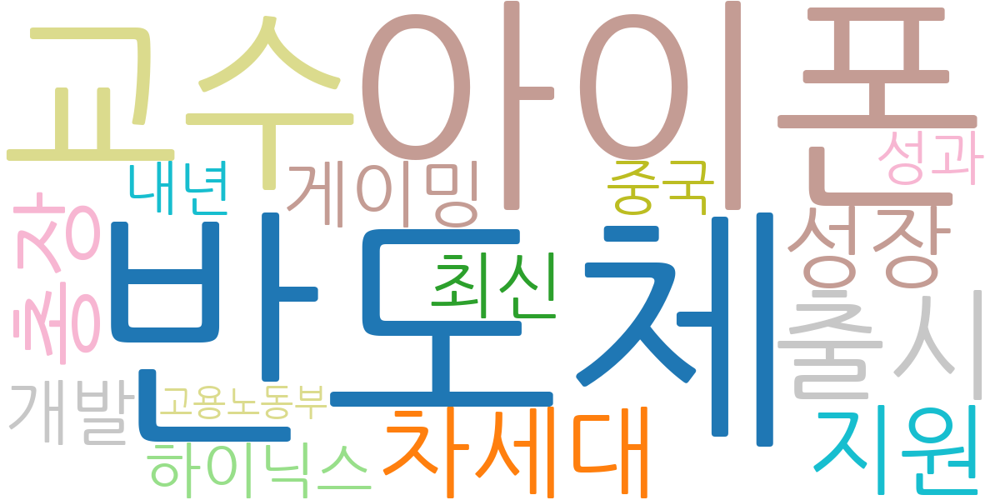
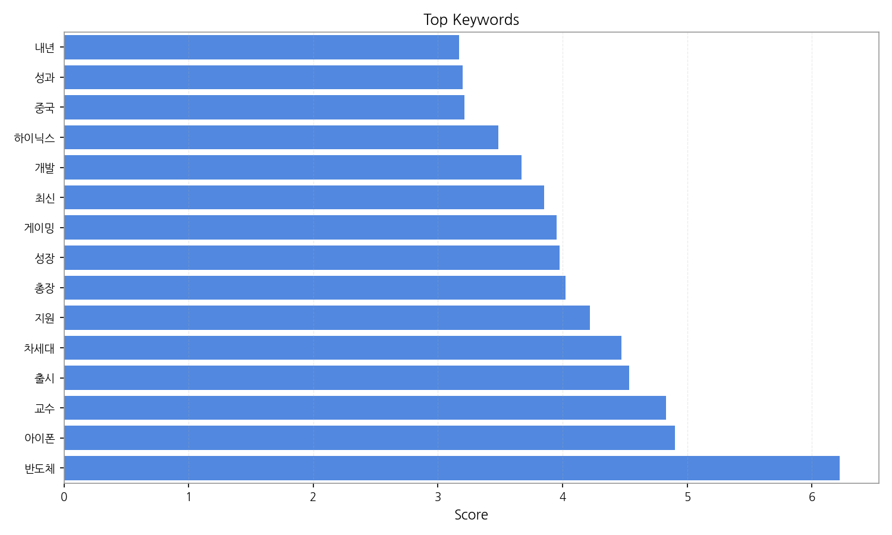
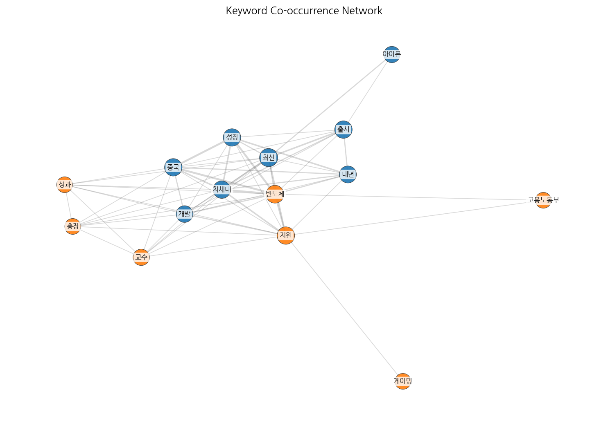
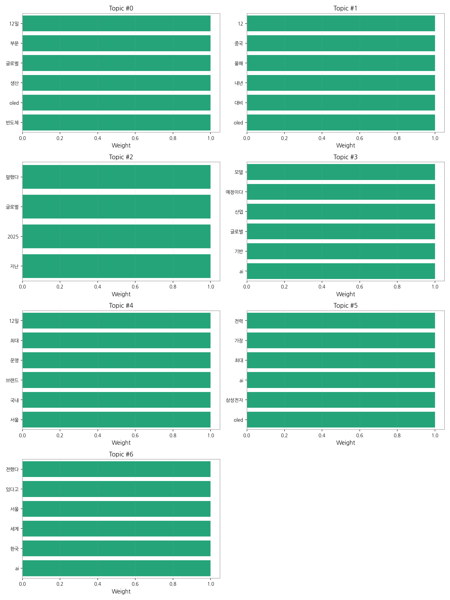
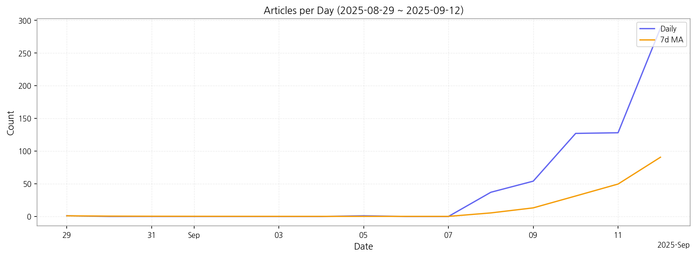

이번 기간 핵심 토픽과 키워드, 주요 시사점을 요약합니다.
핵심 맥락 설명: 데이터는 크게 세 가지 주제로 묶을 수 있습니다. 첫째, 삼성전자를 중심으로 한 OLED 및 반도체 산업의 글로벌 경쟁력과 성장 전망에 대한 기사가 다수를 차지합니다. 둘째, AI 기술 기반 산업의 발전과 관련된 뉴스가 꾸준히 보도되고 있습니다. 셋째, 국내 브랜드의 글로벌 시장 진출 및 운영 전략에 대한 내용도 상당 부분을 차지하며, 특히 서울을 중심으로 한 국내 시장 동향을 다루고 있습니다.
최근 변화/스파이크: 9월 8일부터 기사 수가 급증하기 시작하여 9월 12일에는 288건으로 최고치를 기록했습니다. 이는 특정 시점에 발생한 주요 이벤트, 예를 들어 삼성전자의 신제품 발표나 관련 산업의 중요한 정책 발표 등에 의한 것으로 추정됩니다.
실무 인사이트:

| Rank | Keyword | Score |
|---|---|---|
| 1 | 반도체 | 6.225 |
| 2 | 아이폰 | 4.903 |
| 3 | 교수 | 4.830 |
| 4 | 출시 | 4.537 |
| 5 | 차세대 | 4.474 |
| 6 | 지원 | 4.219 |
| 7 | 총장 | 4.023 |
| 8 | 성장 | 3.978 |
| 9 | 게이밍 | 3.952 |
| 10 | 최신 | 3.852 |
| 11 | 개발 | 3.669 |
| 12 | 하이닉스 | 3.483 |
| 13 | 중국 | 3.211 |
| 14 | 성과 | 3.199 |
| 15 | 내년 | 3.170 |




핵심 맥락 설명: 데이터는 크게 세 가지 주제로 묶을 수 있습니다. 첫째, 삼성전자를 중심으로 한 OLED 및 반도체 산업의 글로벌 경쟁력과 성장 전망에 대한 기사가 다수를 차지합니다. 둘째, AI 기술 기반 산업의 발전과 관련된 뉴스가 꾸준히 보도되고 있습니다. 셋째, 국내 브랜드의 글로벌 시장 진출 및 운영 전략에 대한 내용도 상당 부분을 차지하며, 특히 서울을 중심으로 한 국내 시장 동향을 다루고 있습니다.
최근 변화/스파이크: 9월 8일부터 기사 수가 급증하기 시작하여 9월 12일에는 288건으로 최고치를 기록했습니다. 이는 특정 시점에 발생한 주요 이벤트, 예를 들어 삼성전자의 신제품 발표나 관련 산업의 중요한 정책 발표 등에 의한 것으로 추정됩니다.
실무 인사이트:
| Idea | Target | Value Prop | Score |
|---|---|---|---|
| OLED 디스플레이 제조사 대상 AI 기반 생산 최적화 플랫폼 | KR/EU 지역의 대형 OLED 디스플레이 제조사(삼성디스플레이, LG디스플레이 등) 생산/품질 관리 부서, 연간 매출 1조 이상 기업 | AI 기반 예측 모델을 통해 불량률 예측 및 최적 생산 조건 제시. 실시간 모니터링 및 분석으로 문제 발생 시 신속한 대응 가능. 생산성 향상 및 원가 절감 효과 제공. 차별화 포인트: 다양한 센서 데이터 통합 분석을 통한 정확도 향상. | 4.50 |
| 자율주행차용 고해상도 마이크로 LED 디스플레이 제품 개발 | KR 지역의 자동차 제조사 및 Tier 1 부품 공급업체, 연구개발 부서 및 제품 기획 부서, 대기업 | 고해상도, 고명암비, 고색재현율의 마이크로 LED 디스플레이를 자율주행차에 적용하여 운전자에게 더욱 선명하고 정확한 정보 제공. 안전성 및 편의성 향상. 차별화 포인트: 마이크로 LED 기술을 활용한 초고해상도 구현 및 소형화. | 4.20 |
| AI 기반 사이니지 광고 플랫폼 서비스 | JP 지역의 사이니지 운영 사업자, 백화점, 쇼핑몰, 대형 빌딩 등의 광고 담당자, 중소기업 이상 | AI 기반으로 사이니지 광고 효과 측정 및 최적화. 실시간 데이터 분석을 통한 타겟팅 광고 제공. 광고주에게는 효과적인 광고 운영 및 ROI 향상, 운영자에게는 수익 증대 가능. 차별화 포인트: 사이니지 위치 및 주변 환경 데이터를 활용한 정교한 타겟팅. | 4.00 |
| 전자부품 조달 플랫폼 파트너십(B2B) | KR 지역의 전자 제조 기업, 특히 중소/중견기업 구매/조달 담당자, 연간 매출 500억~5000억 규모 | 다양한 전자부품 공급업체와의 파트너십을 통해 원스톱 조달 서비스 제공. 가격 경쟁력 확보 및 품질 관리 강화. 리드타임 단축 및 생산 효율 향상. 차별화 포인트: AI 기반 부품 추천 및 수요 예측 기능 제공. | 3.80 |
| 모빌리티 디스플레이 시장 분석 및 예측 데이터 서비스 | EU 지역의 자동차 부품 제조사, 디스플레이 제조사, 투자사, 시장조사 기관, 연구개발 부서 및 경영 기획 부서 | 모빌리티 디스플레이 시장에 대한 심층 분석 및 예측 데이터 제공. 경쟁사 분석, 기술 동향, 시장 수요 예측 등 다양한 정보 제공. 데이터 기반 의사결정 지원 및 시장 경쟁력 강화. 차별화 포인트: 특허 분석 및 기술 로드맵 예측 기능 제공. | 3.50 |